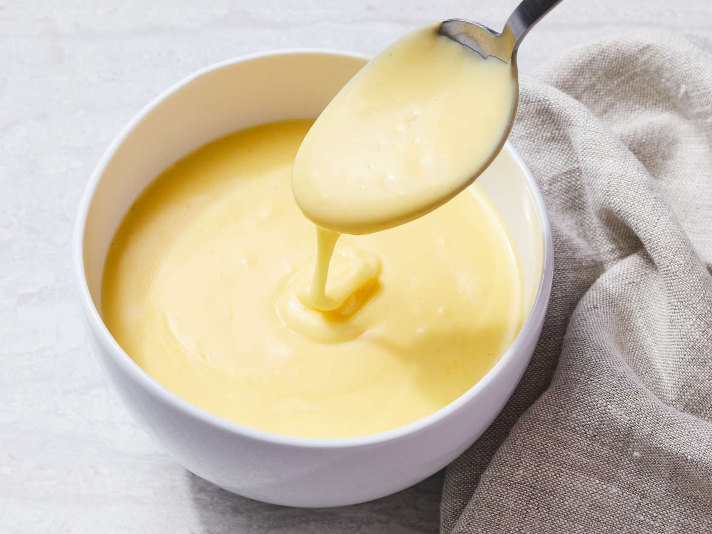

Hollandaise
Home
This is a recipe for a Hollandaise sauce. Hollandaise is essentially a mayonnaise made with butter instead of oil. This is typically made in a bain-marie, but can be done far easier with just a container and an immersion blender. Heating the butter until its bubbling and adding it slowly tempers the eggs so they dont scramble and split the sauce

Ingredients:
- 2 Egg Yolks
- 113g Butter
- Half a Lemon
- Vinegary hot sauce like Cholula (optional, to taste)
Instructions:
- Melt butter in a saucepan on the stove
- Put egg yolks and lemon juice into a container just wider than the head of your immersion blender
- Once butter is bubbling hot, insert immersion blender into the container and get it running, then slowly drizzle in the butter
- Continue slowly adding butter, moving the immersion blender up and down to emulsify